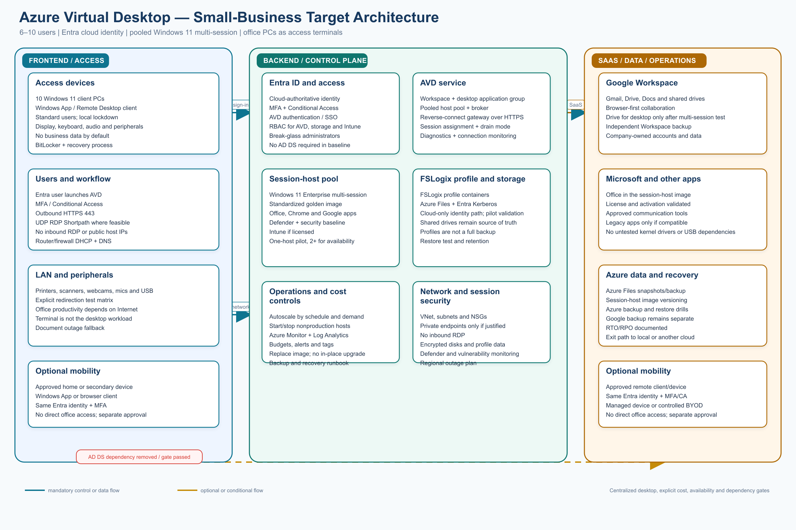
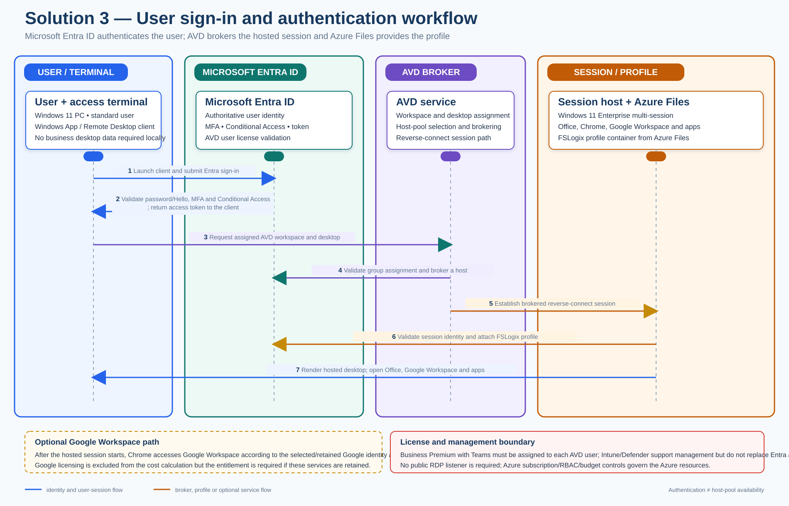

Detailed architecture design, analysis, and comparison
Design scope: 10 Windows PCs, six initial users, currently joined to on-premises AD DS, Google Workspace as the selected/retained SaaS platform when used, Microsoft Office, communication tools, and retirement of the local domain controller.
Document relationship: The authoritative baseline is requirements.md. Remote work and user/device portability are optional; identity security, endpoint recovery, data ownership, application continuity, and AD dependency removal remain mandatory.
1. Executive decision
Azure Virtual Desktop (AVD) is technically valid, but it should remain a conditional or exception architecture for this small-business environment. It moves the Windows desktop and application workload from the office PCs into Azure. The existing PCs become access terminals that display a remote Windows session rather than running the main business desktop locally.
AVD is justified when one or more of the following are confirmed business requirements:
- every user must receive the same centrally managed Windows desktop and application set;
- a legacy Windows application must run in one controlled environment;
- business data should remain primarily in a central cloud desktop rather than on office PCs;
- users need a consistent desktop from multiple approved locations or devices;
- the office PCs should be inexpensive terminals with a longer replacement cycle; or
- a demonstrated security, support, or compliance benefit outweighs the added Azure consumption and operational work.
If the business mainly needs to remove AD DS while retaining 10 capable PCs, Entra ID + Intune remains the simpler and lower-risk baseline. AVD adds a host-pool lifecycle, image management, profile storage, Azure networking, session troubleshooting, licensing validation, Internet dependency, and consumption-cost control. Those components must be accepted as a deliberate trade-off rather than introduced merely as an AD replacement.
The preferred AVD target is:
- Microsoft Entra ID as the authoritative cloud identity;
- six Microsoft 365 Business Premium with Teams licenses as the baseline user subscription for AVD, including Entra ID P1-level controls, Intune Plan 1, Office, Teams, and Defender for Business;
- Entra-joined Windows 11 Enterprise multi-session session hosts;
- a pooled host pool, normally with one host for a pilot and two or more hosts for production availability;
- one AVD workspace and desktop application group for the initial user population;
- a standardized golden image containing Office, Chrome, Google Workspace access, communication tools, and approved line-of-business applications;
- FSLogix profile containers on Azure Files using the supported Microsoft Entra Kerberos cloud-only identity path, subject to a pilot validation of permissions, region, and application behavior;
- Azure autoscale, budgets, alerts, monitoring, and a documented image replacement process;
- office firewall egress to Microsoft and Google cloud services, with no inbound RDP and no public IP addresses on session hosts;
- Intune and Defender for Business controls where the baseline license and operating model justify them; Defender for Cloud and other server-security services remain optional add-ons; and
- optional remote access only after the business approves the mobility scope, device policy, and incremental cost.
Microsoft documents that Entra-joined session hosts can remove the need for line-of-sight to an on-premises domain controller or Entra Domain Services. AVD also uses reverse-connect transport, so the normal design does not expose an inbound RDP listener. The exact license entitlement, Azure Files authentication model, and profile behavior must still be validated before production approval.
The Microsoft 365 Business Premium with Teams subscription is the commercial baseline for this solution, not an additive purchase on top of standalone Intune Plan 1 or Entra ID P1. Google Workspace remains an optional/retained collaboration platform and its license fee is excluded from the cost calculation. AVD Azure resources, independent backup, Copilot, Intune Plan 2/Suite, Entra ID P2, and other Azure security or monitoring services remain separately priced.
2. Architecture diagram

Blue paths are normal identity, management, session, and data flows. Orange paths are optional or conditional. The diagram intentionally shows no permanent AD DS server and no inbound Internet RDP. The office PCs remain required access hardware even though the desktop workload is centralized.
3. Design principles
3.1 Centralize only when the benefit is real
AVD changes the operating model, not just the login method. Every user session, Windows application, profile, and much of the troubleshooting path depends on Azure and Internet connectivity. Select it when centralization solves a documented business problem.
3.2 Prefer a pooled host pool
Six users generally do not need 10 always-on personal desktops. A pooled host pool provides a common image and can place users on an available session host. Pooled desktops reduce idle capacity and simplify image management, but they require application compatibility testing, profile persistence, and clear handling of user-specific settings.
3.3 Separate pilot economics from production availability
One small session host can reduce pilot cost. It is also a single point of failure and may become saturated during concurrent use. Production must either accept that risk formally or use two or more hosts, drain mode, and a tested capacity plan.
3.4 Entra-join rather than recreate AD DS by default
The preferred baseline uses cloud-only Entra identities and Entra-joined session hosts. It does not add a domain controller, Entra Domain Services, or a site-to-site VPN simply to preserve an old domain model. Any application that truly requires LDAP, Kerberos, traditional GPO processing, or a domain-bound service must be identified and treated as a design exception.
3.5 Treat the image as a product
The golden image is the production desktop. It needs ownership, versioning, a maintenance window, application compatibility tests, security updates, rollback images, and a replacement process. Pooled session hosts should be reimaged or replaced rather than upgraded in place when the platform or image lifecycle requires it.
3.6 Profiles are user data, not the backup plan
FSLogix makes a pooled desktop feel persistent by attaching a user profile container. A profile container is not, by itself, a complete backup, an application recovery plan, or an exit strategy. Azure Files protection, independent Google Workspace backup, image versioning, and restore tests are separate requirements.
3.7 Recovery is mandatory; mobility is optional
AVD can make a user less dependent on one physical PC, but the business does not have to enable remote work. If remote or secondary-device access is approved, it must reuse Entra identity, MFA, Conditional Access, logging, and offboarding controls rather than create an unmanaged access path.
3.8 Five-pillar validation using the Azure Well-Architected Framework
Solution 3 maps directly to Azure resources and should be reviewed against all five Azure Well-Architected pillars. The controls below restore the measurable targets and evidence needed to balance availability, security, cost, operations, and user experience.
| Pillar | Assessment | Controls and evidence required before approval |
|---|---|---|
| Reliability | Strong foundation; recovery boundaries and targets must be explicit | Set RTO/RPO and a dependency/availability matrix for Entra, AVD control-plane services, session hosts, Azure Files/FSLogix, DNS, office Internet, and the selected region. Test host drain/failure, profile/storage restore, network degradation, emergency access, and the documented regional/service-outage response. Do not claim regional high availability unless a second-region design is approved and tested. |
| Security | Strong baseline; continuous detection and response must be evidenced | Retain Entra MFA/Conditional Access, Azure RBAC, managed identities where applicable, encrypted disks/data, Defender/endpoint controls, no public IP or inbound RDP, least-privilege redirection, and audit logs. Add vulnerability/patch evidence, security-alert triage, lost-device/session revocation, and periodic privileged-access review. |
| Cost Optimization | Detailed model; resource-level accountability should be added | Apply owner, environment, cost-center, image-version, and shutdown tags; enforce budgets and alerts; use autoscale/scheduled shutdown, right-size from measured concurrency, remove idle resources, and review storage/Log Analytics/backup growth monthly. Validate license eligibility and compare reserved/savings options only after usage is stable. |
| Operational Excellence | Strong runbooks; repeatable deployment and learning loops need explicit evidence | Keep infrastructure and policy decisions reproducible through approved templates or documented build steps, version the golden image and application packages, use pilot rings and rollback, monitor Azure service health, and record incidents, changes, post-incident actions, and support ownership. Test the full host-pool, profile, image, backup, and cost-shutdown runbooks. |
| Performance Efficiency | Partial; baseline metrics exist, but targets and load tests are required | Define targets for connection success, logon duration, profile attach, application launch, CPU/memory/disk latency, session density, and user-perceived responsiveness. Load-test expected concurrency, measure WAN latency/jitter/packet loss, validate autoscale response and RDP Shortpath where applicable, and resize or add hosts based on measured demand. |
4. Logical architecture
4.1 Identity and access layer
Microsoft Entra ID is the authoritative directory for AVD. User objects, groups, authentication methods, Conditional Access, licensing assignment, and administrator roles are managed in Entra.
Recommended controls:
- one verified corporate domain and one named account per employee;
- separate privileged administrator accounts and at least two protected emergency accounts;
- security groups for AVD users, host-pool assignment, application access, and administrators;
- MFA for all users, with phishing-resistant methods for administrators where practical;
- Conditional Access requiring MFA and blocking legacy authentication;
- separate policies for administrator access, office terminals, and optional remote devices;
- sign-in and audit-log retention for the approved period;
- company-controlled tenant ownership, billing, recovery methods, and DNS registrations; and
- a documented joiner/mover/leaver process that revokes AVD, Google, Office, and other SaaS access together.
AVD authentication and Windows session-host authentication should use the same Entra identity. Assign the approved Business Premium with Teams license to every internal AVD user and do not add standalone Intune Plan 1 or Entra ID P1 licenses on top of it. Local-only Windows accounts are not a supported identity solution for AVD user sessions. If a third-party identity provider is retained, it must federate with Entra and pass the AVD authentication and Conditional Access pilot.
User sign-in and authentication workflow

The workflow has a terminal authentication path followed by AVD brokering and hosted-profile attachment:
- The user signs in to the Windows access terminal with the approved local terminal method and launches Windows App or the supported Remote Desktop client.
- The client sends the user to Microsoft Entra ID. Entra validates the identity, MFA, Conditional Access, and the user’s eligible AVD license, then returns an access token.
- The client presents the token to the AVD service and requests the assigned workspace and desktop application group.
- AVD validates the group assignment, selects an available session host, and establishes the brokered reverse-connect session without exposing inbound Internet RDP.
- The session host validates the session identity and attaches the user’s FSLogix profile container from Azure Files using the approved authentication and permissions model.
- The hosted Windows session opens with Office, Chrome, Google Workspace when retained, communication tools, and approved applications. Intune and Defender controls manage the selected devices/hosts but do not replace Entra authentication or the AVD broker.
The Azure subscription and Entra tenant provide the resource, identity, RBAC, budget, and recovery boundary. If Google Workspace is retained, its browser session is established after the hosted Windows session starts; its license fee is excluded from the cost calculation but its entitlement remains required.
4.2 AVD resource hierarchy
Use a small, clearly named Azure resource structure:
| Scope | Example design | Purpose |
|---|---|---|
| Subscription | One company-owned Azure subscription associated with the production Entra tenant | Billing, quotas, policy, support ownership, and AVD resource boundary |
| Resource group | rg-avd-prod-ca |
AVD, host-pool, workspace, diagnostics and dependent resources |
| Host pool | hp-avd-pooled-prod |
Pooled session hosts and load-balancing policy |
| Workspace | ws-avd-prod |
User-facing AVD workspace |
| Desktop application group | dag-avd-desktop-prod |
Full desktop assignment to the initial user group |
| Session-host VM scale set or VM set | Named consistently by image/version | Windows multi-session capacity |
| Storage resource group | rg-avd-storage-ca |
Azure Files profile share and protection resources |
| Monitoring resource group | Existing shared or dedicated Log Analytics scope | Diagnostics, alerts and operational evidence |
Use tags for owner, environment, cost center, data classification, image version, support contact, and shutdown schedule. Keep the first deployment in one Azure region selected for user latency, data residency, and service availability. Multi-region AVD is a separate project and is not part of the lightweight baseline.
The Azure subscription and Microsoft Entra tenant are required foundation components for AVD. Before resource deployment, verify tenant ownership, corporate domain, billing owner, subscription association, RBAC, budgets, activity logging, policy, support contacts, and recovery contacts. Keep any additional Azure service outside the approved AVD scope until it has a resource-level estimate and owner.
4.3 Workspace, application group, and host pool
The AVD service exposes one workspace and one desktop application group for the first phase. Assign access through a group rather than individual users. Add RemoteApp application groups only if a specific workflow benefits from publishing one application instead of a full desktop.
Recommended host-pool settings:
- Pooled host-pool type for shared capacity;
- breadth-first load balancing for an even pilot distribution, or depth-first only after capacity and performance testing support it;
- drain mode before maintenance or image replacement;
- session limits, idle/disconnect timeouts, and logoff policy documented with user impact;
- clipboard, drive, printer, USB, camera, microphone, and local-device redirection disabled by default and enabled only where needed;
- Start VM on Connect only when its latency and quota behavior are acceptable; and
- a scaling plan that powers hosts on and off according to the actual working schedule.
Do not add a public IP to a session-host NIC. Do not publish TCP 3389 to the Internet. The AVD service brokers connections using reverse connect over HTTPS; RDP Shortpath may add UDP performance where network conditions permit.
4.4 Session-host compute and image
The session host is a Windows 11 Enterprise multi-session Azure VM. The final VM size depends on Office usage, browser tabs, Drive behavior, video conferencing, and line-of-business applications. A small pilot can start with one general-purpose VM and measure CPU, memory, disk latency, logon duration, and concurrent-user density before selecting the production size.
The image should include only approved and supportable software:
- Windows 11 Enterprise multi-session with current supported updates;
- Microsoft 365 Apps or separately licensed Office, activated and tested for shared computer use where required;
- Chrome and Google Workspace browser access;
- Google Drive for desktop only after multi-session, profile, caching, and synchronization testing;
- communication and conferencing software with camera, microphone, and media redirection tests;
- Defender and the selected endpoint-security baseline;
- required line-of-business applications, with vendor support confirmed for multi-session;
- approved fonts, printers, certificate chains, and browser extensions; and
- no unapproved kernel drivers, VPN clients, local database servers, or hardware-dependent utilities.
Maintain a versioned image definition and a small test ring. Store the last known-good image and document how to roll back a host pool. For pooled session hosts, plan image replacement/redeployment instead of relying on an in-place Windows upgrade. Validate Windows 11 hardware and application prerequisites before selecting the image.
4.5 Profile and user-data layer
Use FSLogix profile containers when a pooled host pool needs a persistent user experience. The preferred storage target is an Azure Files share configured for Microsoft Entra Kerberos authentication for cloud-only identities, subject to pilot validation.
Profile design requirements:
- one profile container per user with a documented naming and quota convention;
- Azure Files share permissions mapped to the AVD user group and administrators by least privilege;
- exclusions for disposable caches where they improve logon and storage behavior;
- tested handling of Outlook, Chrome, Office, Google Drive, and communication-app caches;
- no assumption that profile containers replace shared-drive permissions or SaaS backup;
- Azure Files snapshots/backup selected according to the RPO/RTO; and
- a restore test that proves a user can sign in to a replacement host with a recovered profile.
Cloud-only Entra Kerberos and FSLogix behavior are feature-specific. Test the exact Azure region, storage configuration, permissions, profile format, and host image before committing production data. If the pilot fails, use a supported alternative such as a personal-host design, OneDrive/known-folder redirection where appropriate, browser-first Google Workspace access, or a separately validated profile-storage architecture. Do not reintroduce AD DS solely because a profile-storage shortcut was not tested.
Business documents should remain in Google Shared drives or other approved SaaS repositories. Local session-host disks and profile containers are working storage, not the authoritative business repository.
4.6 Google Workspace integration
When retained, Google Workspace remains the primary collaboration platform. In the AVD session, users use Chrome, Gmail, Drive, Docs, shared drives, and approved SaaS applications.
Recommended Google design:
- use the same corporate email address in Entra and Google Workspace where possible;
- use browser-first Google Workspace access for the pilot;
- install Google Drive for desktop only after confirming multi-session support, cache location, profile persistence, concurrent-session behavior, and file-locking expectations;
- preserve Shared drive ownership and permissions independent of AVD;
- retain an independent Google Workspace backup and export process;
- define whether offline Google files are allowed, noting that AVD sessions depend on cloud connectivity; and
- test links, Chrome profiles, extensions, printing, download controls, and data-loss-prevention policies.
If Google is the authoritative identity for the wider business, federation or lifecycle synchronization with Entra must be designed explicitly. Avoid manually maintaining two unrelated user directories. The selected identity source, provisioning direction, and offboarding evidence must be recorded before pilot enrollment.
4.7 Office and other applications
Office applications run in the session-host image rather than on the terminal by default. Confirm that the baseline Business Premium license permits use in a shared Windows multi-session environment. Microsoft Office and Google Workspace are complementary in this design: Office supports local document workflows, while Google Workspace remains the SaaS and collaboration system when retained.
For every other application, record:
- publisher support for Azure Virtual Desktop and Windows multi-session;
- license activation and user/device assignment behavior;
- CPU, memory, disk, graphics, and network requirements;
- profile and roaming behavior;
- dependency on LDAP, Kerberos, SMB, a local database, a hardware token, a kernel driver, or an office-only IP range;
- printer, scanner, webcam, microphone, USB, smart-card, and clipboard behavior; and
- backup, data location, and restore procedure.
An application that needs traditional domain services is not silently “solved” by AVD. It must be remediated, replaced, isolated behind a documented exception, or retained on a supported service until a later project.
4.8 Office terminals and local network
The existing PCs can remain as Windows 11 access terminals if they meet lifecycle, performance, security, and recovery requirements. They need:
- a supported Windows client edition;
- Windows App or the supported Remote Desktop client;
- local standard-user operation and controlled administration;
- BitLocker or equivalent device encryption and a documented recovery-key process;
- endpoint protection, patching, inventory, and remote-support controls;
- no default storage of business data outside approved local caches;
- tested display scaling, audio, webcam, printer, scanner, USB, smart-card, and keyboard behavior; and
- a replacement or reprovisioning process independent of the AVD session host.
The office router/firewall should provide DHCP and DNS forwarding after AD DS retirement. The AVD baseline needs outbound access to Microsoft identity, AVD, monitoring, update, and storage endpoints and to Google Workspace. Use the vendor-published endpoint requirements and review them as they change.
Network requirements:
- outbound HTTPS 443 is required for control and reverse-connect traffic;
- UDP RDP Shortpath is optional and should be tested rather than required for acceptance;
- no inbound RDP, SMB, LDAP, or administrative connection from the Internet;
- no public session-host IP addresses;
- VNet subnets, NSGs, and route controls are kept minimal and documented;
- private endpoints and private DNS are used only when a data-control or network requirement justifies their additional cost and administration; and
- office Internet bandwidth, latency, jitter, packet loss, and failover behavior are measured during peak use.
4.9 Azure operations, monitoring, and backup
Operate AVD through a small set of repeatable controls:
- Azure Monitor and Log Analytics for host health, connection failures, sign-in failures, boot failures, and capacity;
- alerting for stopped/unavailable hosts, failed scaling actions, profile attach failures, storage capacity, backup failures, and budget thresholds;
- Azure budgets and cost alerts by subscription, resource group, and host pool;
- scheduled maintenance and drain-mode runbooks;
- image version and rollback records;
- Azure Files backup/snapshots according to the approved RPO/RTO;
- session-host recovery through image redeployment rather than manual repair wherever practical;
- independent Google Workspace backup; and
- quarterly restore evidence for a profile, a shared file, a session host, and administrative access.
Azure Backup protects selected Azure resources; it does not automatically prove that a user can work after a full host-pool or identity failure. Document the recovery sequence and test it.
4.10 Optional business value-adds
These capabilities are not required for the basic AVD design and are excluded from the 58–104 hour implementation estimate and the baseline cost model. Approve each only with an owner, measurable outcome, data boundary, recurring-cost ceiling, and rollback or retirement criterion.
| Optional capability | Small-business value | Planning treatment |
|---|---|---|
| Windows Autopilot for access terminals | Speeds replacement or reprovisioning of the office PCs used to access AVD | Optional Intune-based terminal lifecycle capability; allow 4–8 hours for registration, profile, application, and replacement testing. |
| SharePoint/Teams operating hub | Centralizes procedures, templates, forms, onboarding material, and Microsoft-owned content | Uses baseline Microsoft 365 services where appropriate; allow 6–12 hours. Do not duplicate Google Shared drives without a content-ownership decision. |
| Power Automate standard workflows | Automates approvals, onboarding/offboarding tasks, reminders, and support or backup exceptions | Allow 2–4 hours per lightweight workflow. Premium/custom connectors, gateways, RPA, and AI Builder require separate licensing review. |
| Microsoft 365 Copilot Chat | Web research, drafting, summarization, and general employee assistance | Eligible Business Premium users can use web-based Copilot Chat without an additional Copilot license; allow 2–4 hours for safe-use guidance and a pilot. |
| Microsoft 365 Copilot pilot | Work-grounded assistance across Microsoft 365 email, documents, Teams, and meetings | Requires a separate per-user add-on; pilot with one or two users after reviewing permissions; allow 4–8 hours, excluding license fees. It does not automatically ground on Google Workspace data. |
| Copilot Studio internal FAQ agent | Internal IT, HR, operating-procedure, or customer-service answers | Requires separate agent licensing, Copilot Credits, or usage-based billing; allow 8–16 hours plus content-owner time and ongoing maintenance. |
| Mobile application management | Controlled access from approved mobile/BYOD devices | Optional Intune-based capability; allow 4–8 hours for policy, Conditional Access, privacy, and revocation testing. |
| Azure VM jumpbox or temporary remote server | Controlled administrative or migration access to the Azure environment | Optional only; use private networking and Bastion/VPN, Entra/MFA/RBAC, budgets, automatic shutdown, and an expiry date; allow 6–12 hours plus Azure consumption. |
| Azure Arc for retained on-premises hosts | Central inventory, management, and patch visibility while a server remains | Optional; use only for approved retained hosts. Add Arc/Update Manager/Monitor or Defender charges as applicable and protect Tier 0 systems carefully. |
Defer a custom Azure AI application, Microsoft Sentinel, Azure Firewall, Entra ID P2/governance features, and additional AVD regions until a specific business, regulatory, or revenue case justifies their cost and operational complexity.
5. User and administrator flows
5.1 Normal office sign-in
See the detailed user sign-in and authentication workflow in section 4.1. The operational sequence is:
- The user signs in to the Windows access terminal with a standard local device account or an approved terminal sign-in method.
- The user launches Windows App or the supported Remote Desktop client.
- Entra authenticates the user and enforces MFA and Conditional Access.
- AVD assigns the user to an available session host in the pooled host pool.
- The broker establishes a reverse-connect session; UDP Shortpath is attempted where available and TCP fallback remains available.
- FSLogix attaches the user profile container from Azure Files.
- The user opens Office, Chrome, Google Workspace, communication tools, and approved applications in the hosted Windows session.
The terminal is an access device, not the authoritative desktop. A terminal replacement should not require reconstructing the user’s hosted profile or application configuration.
5.2 New user
- Create the user in the authoritative directory and assign the approved Entra/AVD and application licenses.
- Enforce MFA and add the user to the AVD access group.
- Confirm Google Workspace and other SaaS access through the documented provisioning process.
- Verify profile-container creation, Office activation, Google Workspace access, and application entitlements.
- Provide the Windows App sign-in instructions and a short user orientation.
5.3 New or rebuilt access terminal
- Install a supported Windows client image and current patches.
- Enroll the terminal in the selected management and endpoint-security controls.
- Apply the local lockdown, BitLocker, browser, Windows App, and peripheral policies.
- Test Entra/MFA sign-in, AVD launch, printer/audio/webcam behavior, and sign-out.
- Return the terminal to the user without copying profile containers or business data locally.
5.4 Image maintenance
- Update the image definition in a non-production test ring.
- Test Office, Chrome, Google Workspace, communication tools, profiles, printers, and line-of-business applications.
- Publish a versioned image and place hosts into drain mode one at a time.
- Reimage or replace the selected hosts and confirm profile attachment and monitoring.
- Roll back to the previous image if acceptance tests fail.
5.5 Administrator and support flow
Administrators use separate privileged Entra accounts, MFA, least-privilege Azure RBAC, and documented break-glass procedures. Support starts with the AVD connection/health view, Entra sign-in logs, host health, profile attach events, image version, Azure Files status, and cost alerts. The runbook must distinguish an identity problem, a client/terminal problem, a host-pool capacity problem, a profile/storage problem, an application problem, and an Internet problem.
5.6 Optional remote-work flow
If approved, an employee launches the same AVD workspace from an approved home or secondary device, authenticates with Entra MFA and Conditional Access, and receives the same hosted desktop. No direct connection to the office LAN, domain controller, SMB share, or RDP listener is required.
This optional flow must be separately tested for device trust, browser/client support, audio/video quality, printing, downloads, clipboard, session timeout, lost-device revocation, and data leakage. If the business only needs Gmail, Drive, Docs, and browser SaaS remotely, direct managed-device SaaS access may be simpler and less expensive than AVD.
6. Security baseline
6.1 Identity security
- Entra MFA for every AVD user;
- Conditional Access for MFA, device/session risk, administrators, and optional external access;
- separate privileged accounts and protected emergency accounts;
- least-privilege Azure RBAC for AVD, storage, networking, monitoring, and billing;
- no shared user accounts;
- prompt offboarding and token/session revocation; and
- reviewed sign-in, audit, provisioning, and AVD diagnostic logs.
6.2 Session-host security
- supported Windows 11 Enterprise multi-session image;
- Microsoft Defender and selected endpoint-security controls;
- security baseline, firewall, attack-surface reduction, browser, and application controls;
- current Windows and application updates;
- encrypted OS and data disks using supported Azure encryption;
- no public IP and no inbound RDP;
- local administrator access removed or separately controlled;
- controlled clipboard, drive, printer, USB, camera, and microphone redirection; and
- application allow-list or least-privilege controls where the selected tooling supports them.
6.3 Data security
- Google Workspace and shared-drive permissions remain authoritative for Google data;
- Azure Files profile-share permissions follow least privilege;
- profile, backup, and exported data are encrypted in transit and at rest;
- downloads, clipboard, printing, and local-drive redirection are explicitly approved;
- administrative credentials and recovery keys are not stored in profiles or on terminals; and
- data-retention, legal-hold, and deletion behavior is documented for both Google and Azure.
6.4 Network security
- outbound-only office firewall model;
- vendor endpoint allow-list reviewed during change management;
- no office-to-cloud VPN required in the cloud-only baseline;
- no public management endpoint for session hosts;
- minimal VNet, subnet, and NSG design;
- private endpoints only after a cost/benefit decision; and
- documented behavior if the office Internet connection fails.
7. AD DS dependency-removal gate
AVD does not automatically eliminate every dependency on the old domain. Before stopping the domain controller, discovery evidence must prove that each item is replaced, remediated, or formally waived:
| Dependency | AVD target treatment | Evidence required |
|---|---|---|
| User authentication | Entra identity and MFA | Successful user and admin sign-in tests |
| Windows computer accounts | Entra-joined session hosts and managed terminals | Join, enrollment, and replacement evidence |
| Group Policy | Intune, image policy, application policy, or documented local policy | Policy-to-control mapping and test results |
| DNS/DHCP | Router/firewall or supported cloud/network service | Lease, name resolution, and outage test |
| File shares | Google Shared drives, Azure Files, or approved SaaS | Permission, ownership, backup, and restore test |
| Print services | Direct/cloud printing or supported print service | Print and driver test |
| LDAP/Kerberos | Application remediation or approved retained dependency | Vendor/application evidence |
| Certificates | Cloud PKI, application-managed certificates, or replacement | Certificate issuance and renewal test |
| VPN/RADIUS/Wi-Fi | Cloud identity integration or network-device replacement | Authentication and revocation test |
| Service accounts | Managed identity, app identity, or documented replacement | Rotation, ownership, and run test |
| Scheduled tasks/scripts | Cloud automation, task redesign, or approved local task | Execution, ownership, and recovery test |
| Backup jobs | Azure Files/VM backup and independent SaaS backup | Successful restore evidence |
| Monitoring/alerting | Azure Monitor, endpoint, network, and SaaS alerts | Alert delivery and response test |
The final gate requires a current dependency inventory, exports of required AD information, a rollback plan, tested emergency access, and a change window. Do not power off the only domain controller until the business owner approves the evidence.
8. Migration implementation plan
Time estimate
The following is a planning estimate for six initial users, up to 10 access terminals, and a basic AVD deployment. Effort is hands-on implementation labor; elapsed time includes Azure subscription and licensing decisions, quota/vendor dependencies, user acceptance, migration batches, change windows, and stabilization. Phase 1 and Phase 2 include the company-owned Azure subscription foundation and assignment/validation of the Microsoft 365 Business Premium with Teams baseline. Optional value-adds remain excluded. The phase totals align with the 58–104 hour basic implementation range in section 10.
| Phase | Effort | Indicative elapsed time |
|---|---|---|
| Phase 0 — Discovery and AVD fit decision | 8–12 hours | 1–2 weeks |
| Phase 1 — Azure foundation and governance | 6–10 hours | 3–7 business days |
| Phase 2 — Identity and access foundation | 4–6 hours | 3–5 business days |
| Phase 3 — Image and application engineering | 12–20 hours | 2–3 weeks |
| Phase 4 — AVD service and host-pool pilot | 10–16 hours | 1–2 weeks |
| Phase 5 — Profile, storage, and recovery pilot | 8–16 hours | 1–2 weeks |
| Phase 6 — User and terminal pilot | 6–10 hours | 1–2 weeks |
| Phase 7 — Production rollout | 2–4 hours | 1–2 weeks |
| Phase 8 — Stabilization and AD DS retirement | 2–10 hours | 1–2 weeks |
| Total basic implementation effort | 58–104 hours | Approximately 10–16 weeks |
The elapsed range assumes one implementation owner working part time and does not include hardware procurement, licensing-approval delays, major application redevelopment, regional business-continuity design, or ongoing managed support. Two-host production availability, private endpoints, complex peripherals, or failed profile authentication can increase the estimate.
See the separate Solution 3 detailed implementation action plan for the task-level checklist, owners, dependencies, evidence, effort estimates, go/no-go gates, rollback controls, and handover requirements.
Phase 0 — Discovery and AVD fit decision
- inventory users, PCs, Windows editions, Office licenses, Google Workspace editions, applications, peripherals, bandwidth, and AD dependencies;
- measure peak concurrent users and identify expected AVD session density;
- classify applications as browser/SaaS, Office, multi-session compatible, domain-dependent, hardware-dependent, or retired;
- confirm whether a central desktop is actually required or merely attractive;
- define RTO/RPO, monthly budget ceiling, region, optional mobility scope, and one-host versus two-host availability target;
- record Windows 10 upgrade/replacement requirements; and
- approve a written go/no-go decision for AVD before building production resources.
Phase 1 — Azure foundation and governance
- create or associate one company-owned Azure subscription with the production Microsoft Entra tenant; confirm tenant, domain, billing, ownership, and recovery contacts;
- select region, resource groups, naming, tags, and owners;
- configure budgets, alerts, RBAC, policy, diagnostic settings, and support contacts;
- define VNet, subnet, NSG, DNS, egress, and private-endpoint decisions;
- confirm Azure quotas and eligible AVD licensing; and
- create an implementation rollback and cost-shutdown procedure.
Phase 2 — Identity and access foundation
- confirm Entra tenant ownership and verified domain;
- create groups, privileged accounts, emergency accounts, and MFA/Conditional Access policies;
- purchase and assign six Microsoft 365 Business Premium with Teams licenses as the baseline AVD user entitlement;
- do not add standalone Intune Plan 1 or Entra ID P1 licenses on top of Business Premium; document any separately approved license exception;
- validate that each AVD user has an eligible Windows/AVD entitlement and that Office shared-computer activation rights are covered;
- configure AVD authentication and optional SSO; and
- map the Google Workspace identity lifecycle and offboarding process.
Phase 3 — Image and application engineering
- build a Windows 11 Enterprise multi-session golden image;
- install Office, Chrome, Google Workspace/browser components, communication tools, security agents, and approved applications;
- validate shared-computer licensing and application vendor support;
- test printers, scanners, cameras, microphones, USB, clipboard, and display behavior;
- create an image versioning, test-ring, rollback, and replacement procedure; and
- document every application’s profile, data, identity, and backup dependency.
Phase 4 — AVD service and host-pool pilot
- create the workspace, desktop application group, pooled host pool, and one pilot session host;
- apply drain, timeout, redirection, and load-balancing settings;
- enable diagnostics, monitoring, and autoscale schedule;
- enroll session hosts in Intune/Defender where licensed and justified;
- test Entra-joined host behavior without on-premises line-of-sight; and
- capture baseline CPU, memory, logon, profile, application, and connection metrics.
Phase 5 — Profile, storage, and recovery pilot
- create Azure Files profile storage and configure the selected Entra Kerberos path;
- apply least-privilege share and NTFS permissions;
- attach FSLogix profiles for pilot users;
- test profile creation, reconnect, concurrent session behavior, cache growth, and restore;
- configure Azure Files snapshots/backup as approved; and
- document the fallback if cloud-only profile authentication or an application is not compatible.
Phase 6 — User and terminal pilot
- migrate two representative users with different application and peripheral needs;
- configure two representative Windows access terminals;
- test normal sign-in, MFA, reconnect, disconnect, printer/scanner/audio/video, Google Workspace, Office, communication tools, and support workflows;
- test Internet degradation and a session-host failure;
- measure user experience and cost at expected concurrency; and
- obtain written pilot acceptance before expanding.
Phase 7 — Production rollout
- add production hosts only after sizing and availability approval;
- migrate users in small groups and keep the old AD-dependent path available only for rollback evidence;
- replace or reimage terminals as needed to meet Windows 11 and security requirements;
- publish support instructions and a short user guide;
- enforce budgets, alerts, diagnostics, and backup checks; and
- record exceptions with an owner, expiration date, and remediation plan.
Phase 8 — Stabilization and AD DS retirement
- complete the dependency-removal checklist;
- confirm all users, terminals, hosts, profiles, applications, DNS/DHCP, printing, certificates, VPN/RADIUS, scripts, and backups work without the domain controller;
- export required AD and configuration evidence;
- monitor for an agreed stabilization period;
- take a final backup and document the rollback point;
- stop and decommission the AD DS server only after business-owner approval; and
- securely retire, repurpose, or dispose of the old server and credentials.
Optional value-add work packages
The work below is separate from the 58–104 hour basic AVD implementation:
- Windows Autopilot for access terminals: 4–8 additional hours;
- SharePoint/Teams operating hub: 6–12 additional hours;
- Power Automate standard workflow: 2–4 additional hours per workflow;
- Copilot Chat enablement: 2–4 additional hours;
- Microsoft 365 Copilot pilot: 4–8 additional hours, excluding license fees;
- Copilot Studio FAQ agent: 8–16 additional hours, excluding usage or license fees;
- Mobile application management: 4–8 additional hours; and
- Azure VM jumpbox/temporary remote server: 6–12 additional hours, excluding Azure consumption; and
- Azure Arc/retained-host management: 4–8 additional hours for one to three simple hosts, excluding any service consumption charges.
Complex data integration, regulated content, custom AI, multiple regions, private networking, or advanced security monitoring requires a separate estimate.
Implementation deliverables and completed end state
After the AVD rollout and stabilization period, the approved implementation will deliver:
| Deliverable | Completed outcome |
|---|---|
| Microsoft cloud foundation | Company-owned Microsoft Entra tenant, verified domain, Azure subscription association, ownership/billing, RBAC, budgets, alerts, policies, and recovery contacts |
| Licensed AVD user platform | Six Microsoft 365 Business Premium with Teams licenses assigned to AVD users, with eligible Windows/AVD rights, Entra controls, Intune Plan 1, Office, Teams, and Defender capabilities validated |
| AVD service | Documented workspace, desktop application group, pooled host pool, Entra-joined session hosts, golden image, application set, autoscale, diagnostics, monitoring, and cost controls |
| Profile and data protection | Azure Files/FSLogix configuration, Google Shared drive ownership, Azure resource backup, independent SaaS backup, restore evidence, RPO/RTO, and recovery runbooks |
| Managed access terminals | Up to 10 supported Windows terminals patched, encrypted, protected, inventoried, restricted for redirection, and documented for replacement |
| AD DS retirement | DNS/DHCP and other dependencies transferred or remediated; domain controller demoted and retired after acceptance of the dependency gate |
| Optional value-adds, if approved | Autopilot terminal profile, SharePoint/Teams hub, workflows, Copilot guidance/pilot, FAQ agent, MAM, or Arc-enabled retained hosts with owners, costs, controls, and acceptance evidence |
| Handover package | Architecture, image/application register, policy/configuration register, migration ledger, recovery and support runbooks, cost/license register, rollback evidence, and business acceptance sign-off |
9. Operating model
Routine operations
| Frequency | Activity | Evidence |
|---|---|---|
| Daily/automated | AVD health, failed connections, host availability, profile and backup alerts | Alert queue and response record |
| Weekly | Review host capacity, scaling actions, failed sign-ins, image drift, and user-impacting incidents | Short operations review |
| Monthly | Review Azure spend, budgets, inactive users, storage growth, patch status, and backup success | Cost and service report |
| Quarterly | Restore profile/file/host samples, test emergency access, review RBAC and Conditional Access, review image lifecycle | Recovery and access evidence |
| On change | Pilot image/app/network changes, drain hosts, update documentation, and retain rollback | Change record |
Support model
The target must be supportable by a generalist administrator or managed service provider. The runbook should include:
- user cannot authenticate;
- Windows App cannot connect;
- host pool has no available session host;
- session is slow or disconnects;
- profile does not attach;
- Google Workspace or Office application fails;
- printer/scanner/audio/video redirection fails;
- host image or update is defective;
- Azure Files or backup is unavailable; and
- Azure spend exceeds the expected envelope.
The support provider must have documented access, named ownership, a transfer procedure, and no dependency on one employee’s personal account.
10. Licensing, capacity, and cost model
Licensing requirements
Each user requires an eligible Windows/AVD entitlement. Confirm the exact entitlement before purchase; do not assume that an existing Microsoft or Google subscription automatically includes every AVD right. Validate:
- Windows 11 Enterprise multi-session access rights;
- Microsoft 365 Apps or Office shared-computer activation rights;
- Entra ID and Conditional Access features;
- Intune enrollment and endpoint-security features if selected;
- Azure Files and Entra Kerberos feature support;
- third-party application licenses for shared sessions; and
- external-user licensing if any nonemployee or external access is proposed.
Microsoft and Google license profile
Prices below are Canadian list-price planning assumptions checked on 2026-09-04, before applicable tax. Confirm the final quote, currency, billing term, existing entitlements, and AVD eligibility before purchase.
| Required item | Current planning price | Six-user planning cost | Scope and notes |
|---|---|---|---|
| Microsoft 365 Business Premium with Teams (baseline) | CAD 29.80/user/month, annual commitment | CAD 178.80/month or CAD 2,145.60/year | Baseline AVD user subscription; includes Entra ID P1-level controls, Intune Plan 1, Office, Teams, and Defender for Business. Copilot is excluded. Confirm the purchased SKU is assigned to each AVD user. |
| Microsoft 365 Business Premium without Teams | CAD 25.50/user/month, annual commitment | CAD 153.00/month or CAD 1,836.00/year | Use only if Teams is not required and the no-Teams SKU meets the AVD, Office, security, and collaboration requirements. |
| Optional Google Workspace edition | Optional; price excluded | CAD 0 included cost | Retained for Gmail, Drive, Docs, Shared drives, and collaboration inside the hosted desktop when selected. The required edition and entitlement must still be verified. |
| Azure subscription | No fixed subscription fee; pay-as-you-go for Azure resources | CAD 0 fixed | Required company-owned Azure management and billing boundary. AVD compute, disks, Azure Files, networking, monitoring, autoscale, and backup are consumption charges. |
| Independent SaaS/endpoint backup | CAD 50–100/month planning allowance | CAD 50–100/month | Vendor quote required; Google Drive synchronization is not a backup. |
Microsoft documents Microsoft 365 Business Premium as an eligible internal-user license for Windows 11 Enterprise multi-session Azure Virtual Desktop. Every internal user who accesses AVD must have an eligible license assigned. Entra ID Free alone is not enough for the target Conditional Access and automatic-enrollment controls, while standalone Intune Plan 1 plus Entra ID P1 should not be treated as an AVD Windows entitlement; if Business Premium is not selected, choose another license explicitly listed as eligible for AVD and validate Office/shared-computer rights separately.
Intune Plan 1 is CAD 10.90/user/month when purchased standalone with annual billing; Plan 2 is an optional CAD 5.40/user/month add-on, and Intune Suite is an optional CAD 13.60/user/month add-on. These add-ons are not included in the baseline AVD estimate. Do not purchase standalone Entra ID P1 or Intune Plan 1 on top of Business Premium unless a reseller confirms a specific uncovered requirement.
Microsoft 365 Business Premium included services
In addition to Entra ID P1-level controls and Intune Plan 1, the baseline Microsoft 365 Business Premium with Teams subscription includes:
- Office desktop, web, and mobile applications;
- Exchange Online business email and calendar;
- Teams chat, meetings, and collaboration;
- SharePoint team sites and document collaboration;
- OneDrive for Business storage;
- Microsoft Defender for Business;
- Microsoft Defender for Office 365 Plan 1;
- Microsoft Purview information protection and DLP capabilities; and
- related services such as Planner, Forms, Lists, Bookings, Loop, Clipchamp, and To Do.
Copilot, Teams Phone/PSTN, Entra ID P2, Intune Plan 2/Suite, Azure consumption, Google Workspace, and independent backup are not included in the baseline license price. Entra ID Free is an optional reduced-control alternative, but it lacks custom Conditional Access and device-compliance gates, some self-service password-reset/writeback and enrollment paths, dynamic groups, and advanced risk/governance capabilities; it is not the recommended AVD profile.
License-only recurring baseline
| Profile | Monthly estimate | Annual estimate | Assumptions |
|---|---|---|---|
| Business Premium with Teams + backup | CAD 228.80–278.80/month | CAD 2,745.60–3,345.60/year | Six users; Google Workspace is optional and excluded; excludes AVD Azure resource consumption. |
| Business Premium without Teams + backup | CAD 203.00–253.00/month | CAD 2,436.00–3,036.00/year | Six users; Google Workspace is optional and excluded; excludes AVD Azure resource consumption. |
| Optional Google Workspace license | CAD 0 included cost | CAD 0 included cost | Required if the selected design retains Google Workspace; add the actual fee if it is not already funded. |
The Azure subscription itself is not a monthly license line. AVD resources generate consumption charges even when no additional Azure subscription fee applies. Use the Azure Pricing Calculator after the concurrency pilot to estimate the selected host size/count, disk tier, Azure Files profile storage, backup, Log Analytics, network, and autoscale schedule. The gross AVD operating ranges below include the revised license-only baseline, backup, and estimated Azure consumption; do not add the license-only table a second time.
Google Workspace remains an optional/retained separate subscription and is not replaced by AVD. If selected, it remains required for Gmail, Drive, Docs, shared drives, and related workflows, but its license fee is excluded from this comparison calculation. AVD does not eliminate Google Workspace backup, domain ownership, or application licensing.
Capacity profiles
| Profile | Session-host approach | Availability | Appropriate use |
|---|---|---|---|
| Pilot | One small general-purpose host | Single point of failure | Two to three representative users and application testing |
| Lean production | One right-sized host with autoscale | Low; planned outage on host failure | Only with explicit business acceptance of the risk |
| Recommended production | Two right-sized hosts with drain mode and autoscale | Better, but not full regional HA | Normal six-user workload with basic continuity |
| Growth/exception | Additional hosts, app groups, storage and network controls | Higher cost and operations | Proven concurrency, legacy apps, or wider mobility need |
Budgetary planning ranges
Use the Azure Pricing Calculator and current license quotes for approval. The following is a planning model, not a quote:
| Cost area | Planning treatment |
|---|---|
| Eligible user licenses | Per-user recurring cost; validate existing Microsoft entitlements and Office rights |
| Session-host compute | Main variable; autoscale and scheduled shutdown reduce off-hours use |
| OS/data disks | Per-host recurring storage; include performance tier requirements |
| Azure Files profiles | Capacity, transactions, redundancy, snapshots and backup |
| Monitoring | Log Analytics ingestion, retention, alerts and diagnostic settings |
| Backup | Azure Files/VM protection and independent Google Workspace backup |
| Network | Usually modest for a small office, but include egress and optional private endpoints |
| Support/implementation | Higher than local endpoint migration because image, profile, host-pool and session operations are new |
For a six-user deployment, a low-concurrency pilot may fit within a few hundred dollars per month of Azure infrastructure, while two always-available hosts, premium storage, backup, monitoring, and additional licenses can raise the total substantially. Autoscale reduces idle compute; it does not remove licensing, storage, support, or Internet costs. Approve the monthly ceiling only after a concurrency pilot.
Budgetary implementation effort
| Scope | Estimate |
|---|---|
| Discovery and AVD fit assessment | 8–12 hours |
| Azure foundation, identity, network and governance | 8–16 hours |
| Image, application and peripheral engineering | 12–24 hours |
| AVD host pool, monitoring, autoscale and pilot | 10–16 hours |
| FSLogix/Azure Files, backup and recovery tests | 8–16 hours |
| User rollout, documentation and AD retirement | 12–20 hours |
| Basic total | 58–104 hours |
Legacy applications, two-host availability, private endpoints, complex printing, third-party federation, or failed profile authentication can add material effort. The implementation estimate should be revised after Phase 0.
Standard deployment, operational, and maintenance budget
For a comparable six-user planning model, use Canadian dollars before tax and annual commitments where available. “Deployment” is one-time professional services. “Operational” is recurring licensing, Azure consumption, and backup cost and excludes support labor. “Maintenance” is routine administration at CAD 125–150/hour and excludes incidents, major projects, hardware replacement, and vendor support contracts.
| Cost category | Standard planning amount |
|---|---|
| One-time deployment | CAD 7,250–15,600 for the documented 58–104 hour basic scope. A low-concurrency pilot may fit within CAD 6,000–10,800 for 48–72 hours. |
| Recurring operational cost | CAD 808–1,678/month gross for two right-sized session hosts, Microsoft 365 Business Premium with Teams without Copilot, optional Google Workspace excluded from the calculation, and backup. A one-host pilot is approximately CAD 508–978/month, but retains the host single point of failure. |
| Routine maintenance | CAD 750–1,800/month for approximately 6–12 hours of image, host-pool, FSLogix/profile, autoscale, monitoring, patch, release, backup, and recovery administration. A one-host pilot may require approximately 4–8 hours/month, or approximately CAD 500–1,200/month. |
| Excluded or optional items | Google Workspace license fee, Copilot, Intune Plan 2/Suite, Entra ID P2, Azure Arc, private endpoints, higher regional availability, hardware replacement, Internet service, optional dual-WAN/5G or UPS, major application work, incident response, and vendor support contracts. |
Optional Azure add-on cost treatment
| Optional add-on | Cost treatment and planning rule |
|---|---|
| Azure VM jumpbox or temporary remote server | No fixed license line; add VM compute, disks, network, Bastion/VPN, backup, monitoring, and log-ingestion consumption. Use automatic shutdown and remove the resources when the approved temporary purpose ends. |
| Azure Arc-enabled on-premises hosts | Basic Arc connection and Azure resource organization are generally offered at no additional charge; Update Manager, Monitor, Defender, Sentinel, guest configuration, Windows Server pay-as-you-go, log ingestion, and storage may add per-server or consumption charges. |
These add-ons are excluded from the AVD operating ranges and the 58–104 hour basic implementation estimate. Price them separately with their security controls, owner, budget, and exit criteria.
11. Analysis and comparison with the other options
11.1 Requirement fit
| Requirement dimension | Solution 1: Entra ID + Intune | Solution 2: Google Workspace + GCPW | Solution 3: AVD |
|---|---|---|---|
| Remove AD DS | Strong | Possible with feature-gap validation | Strong for the cloud-only baseline |
| Retain capable local PCs as workstations | Strong | Strong | PCs become access terminals |
| Google Workspace alignment | Good with integration | Strongest | Good inside hosted sessions, but adds another desktop plane |
| Windows policy and security depth | Strongest of the three | Variable; validate gaps | Strong on session hosts; terminals still need management |
| Centralized desktop/application consistency | Moderate | Limited | Strongest |
| Local/offline productivity | Strong | Strong | Weak; depends on Internet and Azure availability |
| User/device portability | Optional and straightforward | Optional and straightforward | Strong if hosted-session model is useful |
| Local data minimization | Moderate | Moderate | Strong for business workload, with profile/storage caveats |
| Infrastructure simplicity | Strong | Strong if gaps are acceptable | Weakest |
| Predictable low cost | Strong | Often strongest | Weakest; consumption and license sensitivity |
| Small-business maintainability | Strong | Strong with documented control gaps | Requires specialist runbooks or managed support |
| Legacy AD-dependent applications | Requires remediation | Requires remediation | May centralize them but does not remove the dependency automatically |
11.2 Why AVD is third for this baseline
AVD is third because the requirements prioritize lightweight infrastructure, low recurring cost, stable local productivity, and operation without a full-time specialist. AVD introduces:
- Azure VM compute and storage consumption;
- pooled-session capacity and single-host availability decisions;
- golden-image lifecycle and application compatibility work;
- FSLogix and Azure Files permissions, backup, and restore;
- terminal redirection and remote-session troubleshooting;
- greater dependence on office Internet and Azure regional services; and
- more licenses and operating procedures than are necessary when the existing PCs are capable Windows 11 workstations.
Those trade-offs are worthwhile only when centralized desktops or a terminal model deliver a measurable business benefit. AVD should move ahead of Solution 2 only when Windows application control, central data location, or standardized hosted desktops are more important than the Google-first low-cost model. It should not displace Solution 1 for a simple AD retirement without such a benefit.
11.3 Decision rule
Select AVD if the pilot proves all of the following:
- the business accepts Internet/Azure dependency and the approved monthly cost ceiling;
- the application set, Office licensing, peripherals, and Google Workspace workflows work in multi-session;
- the profile-storage design passes sign-in, performance, backup, and restore tests;
- one-host risk or the cost of two hosts is explicitly approved;
- the resulting centralization materially improves support, data control, application delivery, or mobility; and
- the organization can operate the service using a documented generalist or managed-support model.
Otherwise, use Solution 1 as the default target and keep Solution 2 as the Google-centric alternative.
12. Risks and mitigations
| Risk | Impact | Mitigation |
|---|---|---|
| One host fails | All users may lose the desktop | Pilot with one host only; use two production hosts or formally accept the risk |
| Office Internet fails | Users cannot reach hosted desktops | Test connectivity, maintain SaaS/mobile fallback where approved, document outage procedure |
| Azure regional/service outage | Hosted desktop unavailable | Define RTO/RPO, status/support procedures, and a later BCDR decision; do not imply regional HA |
| AVD consumption exceeds budget | Cost is unpredictable | Autoscale, schedules, right-size hosts, budgets, alerts, and monthly review |
| Profile container/authentication issue | Slow or failed logon, lost settings | Pilot Entra Kerberos/Azure Files, restore test, fallback profile design |
| Google Drive for desktop is incompatible | File sync or profile problems | Browser-first pilot; test Drive in multi-session before image inclusion |
| Printer/USB/camera behavior fails | Operational disruption | Explicit redirection matrix and direct/cloud peripheral alternatives |
| Image drift or bad update | Multiple users affected | Test ring, versioned image, drain mode, replacement and rollback |
| License is not eligible | Compliance/cost problem | Verify user, Windows, Office, AVD, and application entitlements before deployment |
| Legacy app requires AD DS | Domain controller cannot be retired | Remediate, replace, isolate, or document a temporary dependency with owner and date |
| Private networking becomes overbuilt | Cost and maintenance increase | Start with simple supported VNet/egress; add private endpoints only for a proven need |
| Terminal is compromised | Session/data exposure | Patch/encrypt/lock down terminals, require MFA, limit redirection, revoke lost-device sessions |
| Profile or backup is treated as the data source | Recovery or exit failure | Keep Google Shared drives authoritative; maintain separate Azure and SaaS backups |
| AVD skills are unavailable | Slow or expensive support | Use concise runbooks, monitoring, managed support, and transfer-ready documentation |
| Microsoft 365 user license is missing or not AVD-eligible | Access failure, noncompliance, or unexpected cost | Assign Business Premium with Teams to every AVD user, verify Windows/AVD and Office shared-computer rights, and validate any exception before production |
| Google Workspace license assumption is misunderstood | Google access or collaboration failure | Treat Google Workspace as optional/retained, exclude its fee only from the planning calculation, and verify entitlement if the design uses Gmail, Drive, Docs, or shared drives |
| Copilot or chatbot exposes overshared or inaccurate information | Confidentiality risk, incorrect advice, or loss of trust | Review Microsoft 365/SharePoint permissions, use curated sources, require human review, and define an owner and escalation path |
| Optional add-ons expand AVD complexity | Cost and support burden increase | Approve each add-on separately with a use case, owner, budget, acceptance test, and retirement criterion |
13. Acceptance criteria
The option is accepted only when the following tests pass or a named business owner signs a documented exception:
Identity and access
- all pilot users authenticate to AVD with the authoritative Entra identity;
- six Microsoft 365 Business Premium with Teams licenses are assigned to the approved AVD users, and their Windows/AVD and Office entitlements are validated;
- MFA and Conditional Access behave as designed;
- privileged and emergency access are tested without relying on one employee;
- user provisioning and termination revoke AVD, Google, Office, and other SaaS access;
- session-host join type is consistent and no on-premises line-of-sight is required in the cloud-only baseline.
Desktop and application
- workspace, desktop application group, pooled host pool, and capacity policy work;
- the golden image is versioned, recoverable, and supported;
- Office activation and Google Workspace access work for representative users;
- required communication, browser, and line-of-business applications pass their compatibility tests;
- profile containers attach, reconnect, and restore within the agreed time;
- printers, scanners, audio, webcams, USB, clipboard, and display behavior meet role requirements;
- users can reconnect after a network interruption without profile corruption; and
- a replacement office terminal can access the same user desktop without manual data reconstruction.
Security and network
- no inbound RDP or public session-host IP is present;
- outbound endpoint access is documented and monitored;
- terminal and session-host encryption, patching, endpoint protection, and local-admin controls pass review;
- approved data-redirection settings are enforced;
- logs and actionable alerts are delivered to the administrator; and
- lost-terminal/session revocation is demonstrated.
Recovery, operations, and cost
- the company-owned Azure subscription is associated with the production Entra tenant and has billing ownership, RBAC, budgets, alerts, policy, and activity-log controls tested;
- Azure Files/profile, session-host image, Google Workspace, and administrative restore tests pass;
- autoscale, drain mode, maintenance, and rollback procedures are documented and exercised;
- budgets and cost alerts fire at the approved thresholds;
- the support runbook can distinguish identity, client, host, profile, application, network, and Azure service faults;
- the three-year cost model and monthly ceiling are approved; and
- the complete AD DS dependency-removal gate is signed off before decommissioning.
If optional SharePoint/Teams, workflows, Copilot, FAQ-agent, MAM, Arc, or other Azure services are enabled, their owner, cost boundary, security controls, support procedure, and acceptance evidence must also be approved.
Optional mobility
If remote work or portability is enabled, also verify approved external-device policy, MFA, Conditional Access, session revocation, performance, peripherals, download/clipboard controls, and the incremental cost. If not enabled, record that it is intentionally out of scope and do not treat its absence as a failure.
14. Decisions required before implementation
- Is centralized Windows desktop delivery a confirmed business requirement, or is the objective only AD retirement?
- Which company-owned Azure subscription, tenant association, billing owner, and region will own the service?
- Are six Microsoft 365 Business Premium with Teams licenses approved as the AVD baseline, and which users require them?
- What user concurrency, application mix, and performance target determine session-host sizing?
- Is a pooled host pool acceptable, and is one-host risk acceptable for pilot or production?
- Which applications and peripherals must run inside the hosted session?
- Will Google Workspace be browser-first, or is Google Drive for desktop required in the multi-session image?
- Does the selected Azure Files/Entra Kerberos/FSLogix path pass the cloud-only pilot?
- Which Microsoft, Windows, AVD, Office, Google, and third-party licenses are already owned and eligible?
- Will session hosts and terminals be enrolled in Intune, and what additional security tool is required?
- What monthly operating-cost ceiling, RTO, RPO, and support arrangement are approved?
- Is optional remote work or user/device portability enabled now, deferred, or limited to managed devices?
- Which optional business value-adds, if any, will be approved, and who owns their data, cost, and support?
- Which AD DS dependencies remain, and who owns each remediation or exception?
15. References
- Microsoft 365 Business Premium pricing in Canada
- Microsoft Intune plans and pricing in Canada
- Microsoft Intune licensing
- Microsoft Entra licensing
- Azure subscription and Microsoft Entra tenant relationship
- Microsoft 365 Copilot Chat requirements
- Microsoft Copilot licensing options
- Power Automate licensing
- Copilot Studio billing and consumption
- Microsoft Defender for Business overview
- Google Workspace pricing in Canada
- Azure Virtual Desktop licensing
- Understand and estimate Azure Virtual Desktop costs
- Azure Pricing Calculator
- Azure Virtual Desktop prerequisites
- Azure Bastion documentation
- Azure Arc-enabled servers overview
- Azure Update Manager overview
- Azure Arc pricing
- Deploy Azure Virtual Desktop
- Azure-joined session hosts
- Azure Virtual Desktop authentication
- Configure single sign-on for Azure Virtual Desktop
- Azure Virtual Desktop network connectivity
- RDP Shortpath for Azure Virtual Desktop
- Azure Virtual Desktop security recommendations
- Create and assign an autoscale scaling plan
- FSLogix profile containers for Azure Virtual Desktop
- Store FSLogix profile containers on Azure Files
- Enable Microsoft Entra Kerberos authentication for Azure Files
- Configure FSLogix profile containers with Azure Files and Microsoft Entra ID
- Azure Virtual Desktop multi-region business continuity
- Azure Well-Architected Framework pillars